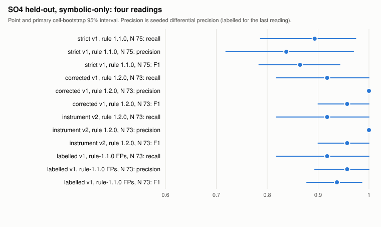
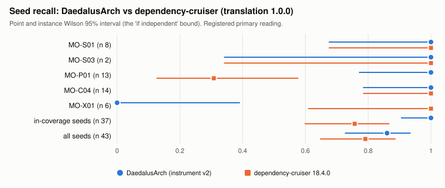

MSc thesis · Universidad Nacional de Colombia · October 2026
Governing AI-agentic development with an architectural firewall
Study 1 (v1.2E) results: what holds, what doesn't, and the v1.3 cycle that makes the tool provably valid before Study 2.
DaedalusArch turns an architecture spec into checks that run on every change
Symbolic core
Deterministic, auditable and fast. The same code always gets the same findings.
Neural layer
Explains and judges what rules can't express. It's frozen, pinned and recorded.
Use case
A CI gate, or an agent's tool through MCP, that stops architectural erosion as it happens.
Every result is pre-registered or declared post-hoc, and all of it reproduces
run-experiment refuses any plan whose registered artefacts changed, and CI checks it on every PRStatus of SO1–SO5 on the frozen Study 1 branch
| SO | Promise | Status | Evidence in one line |
|---|---|---|---|
| SO1 | Spec language and style libraries | Partly | Clean, Layered and NestJS: 27/27 templates each. Hexagonal was missing in Study 1 and is now built in v1.3. |
| SO2 | Graph extraction, coverage and latency | Done | 100% of files parse; 5.3 s on the largest base against a 30 s budget; FLOWS_TO limitation declared. |
| SO3 | Rules plus judge give AHS and verdicts | Partly | Judge agrees with a Gemini panel (AC1 0.982) and is model-stable (κ 0.766), but it changes no verdict and its catch rate is unmeasured. |
| SO4 | P/R/F1 on a seeded golden set (80–120) | Shortfall | Recall 0.893 registered, 0.918 corrected. N = 75 against the floor of 80. Real-code precision is uncertain. |
| SO5 | LLM × spec-quality study (E1) | Run | 72 cells, 65 judged. Spec level matters, but through project size; full spec beats vague prose. |
Extraction is complete and fast enough for CI; data-flow edges are a known gap
On held-out code it finds the violations it was built to find

| Reading | Recall | Prec. | F1 |
|---|---|---|---|
| Strict, N 75 reg. | 0.893 | 0.838 | 0.865 |
| Corrected, N 73 post-hoc | 0.918 | 1.000 | 0.957 |
| Labelled, N 73 post-hoc | 0.918 | 0.957 | 0.937 |
- All 6 misses are dynamic
import(), which is outside extractor coverage. Now fixed in v1.3. - N = 75 is below the floor of 80, because 10 seeds failed type-check. This is reported as a deviation.
- Recall measures construct sensitivity, not detection of naturally occurring violations.
On real projects, precision is low and poorly measured; that is the weak point
Why so noisy
Core projects score 0.59 and E7 projects 0.21. The E7 specs were generated mechanically from folder names. False alarms come from metric and convention proxies, type-only imports and layer mapping, not from the structural import rules.
What it means
A finding can be wrong at four points: graph, spec, rule or meaning. Study 1 measured only the end-to-end result. v1.3 measures each point separately, on greenfield code where the spec is known.
It matches a mature import checker on the rules both tools can express

- Shared rules: they agree, apart from two explained points.
- dependency-cruiser catches the 6 dynamic-import seeds that we missed.
- Our apparent edge on domain purity came from a translation defect that favoured us. It was declared post-hoc.
- Real fix commits: both tools flag the same 2 of 5.
- Our advantage is breadth: pattern, SOLID-proxy, metric and judge dimensions that have no external comparator yet.
The judge is consistent and stable, but its effect and its catch rate are unproven
Specs change what agents build; a precise spec beats vague prose

- Spec level has an effect (Holm p 0.0003), but the direction is reversed: no spec scores highest. reg.
- Why: without a spec, models build small flat projects (about 9 files) where few rules can fire. Findings per file are equal across levels.
- At equal size, a full AaC spec beats minimal prose: Cliff's δ 0.52 (0.47 after LOC adjustment). post-hoc
- No model effect. One rule (test-file pairing) produced 83% of findings.
- Self-preference p 0.014, driven by the Haiku cells.
A plain LLM reviewer finds planted bugs, but is not repeatable or exhaustive
What Study 1 supports, and what it does not yet
Supports
- It finds the canonical violation constructs reproducibly, on held-out code, at CI speed.
- It matches dependency-cruiser on the rules both can express.
- Specs change the structure agents build, the AHS registers it, and vague prose is worst.
- The judge isn't failing sound code, and it's stable across judge models.
- The method holds: pre-registration, declared post-hoc changes, and byte-identical reproduction.
Does not support yet
- That findings on real code are mostly correct (0.33 registered, wide CI).
- That the judge improves verdicts or catches unsound code.
- That the firewall beats a plain LLM review at seed detection.
- That specs make architecture worse (the reversal runs through size).
- Any SO5 claim beyond one vendor, two tasks and single-shot generation.
Before Study 2: prove each link of the measurement chain on greenfield code
| Study 1 (v1.2E) | v1.3 (development) | Study 2 |
|---|---|---|
| Frozen, reported exactly as run | May learn from all Study 1 data; every change is an ADR | Pre-registered before it runs, on fresh sealed tasks: firewall-in-the-loop vs no firewall, over multi-step feature builds |
Targets (provisional): graph ≥ 0.95, recall ≥ 0.90 per style, blocking-rule precision ≥ 0.90, judge catch rate ≥ 0.80. A missed target is either fixed or waived in writing.
First evidence: the graph is faithful, and one real defect was found and fixed
- New styles: Hexagonal (Cockburn) and DDD, tactical and strategic (Evans, Vernon). Every rule is traced to its source.
- Anti-circularity: a separate model re-derives the expected findings blind, and the author adjudicates disagreements.
- Rule tiers sealed in advance: only structural style constraints can block, and proxies and conventions only warn. The Study 2 tasks are sealed by hash.
- An adversarial review (2 blocking, 5 major findings) shaped the protocol before any measurement.
What I need from you
Direction
- Approve the frame: Study 1 as the pilot, v1.3 as validation, Study 2 as the main result.
- Confirm the greenfield focus, with brownfield spec inference as a later chapter.
- Confirm the v1.3 exit targets, or adjust them.
Reporting and scope
- How to frame the reversed E1 spec effect and the Codex arm.
- Would you rate 30 items as an independent second human rater?
- Paper split (E1 study, tool, judge) and which comes first.
- Extensions: Grok arm, MCP firewall-in-the-loop as the Study 2 treatment.
Docs/reports/director-report-2026-10.md, and the v1.3 brief in Notion.